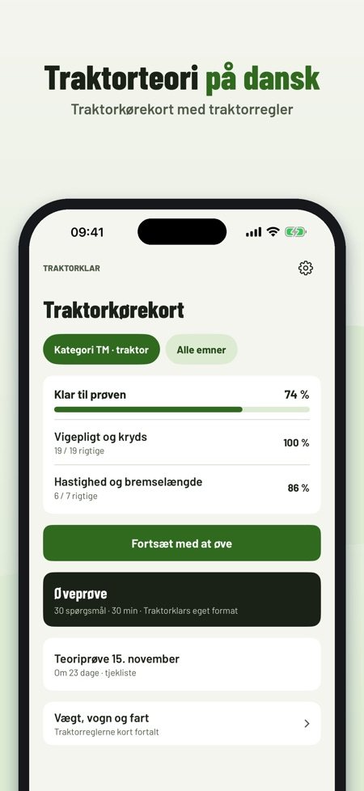
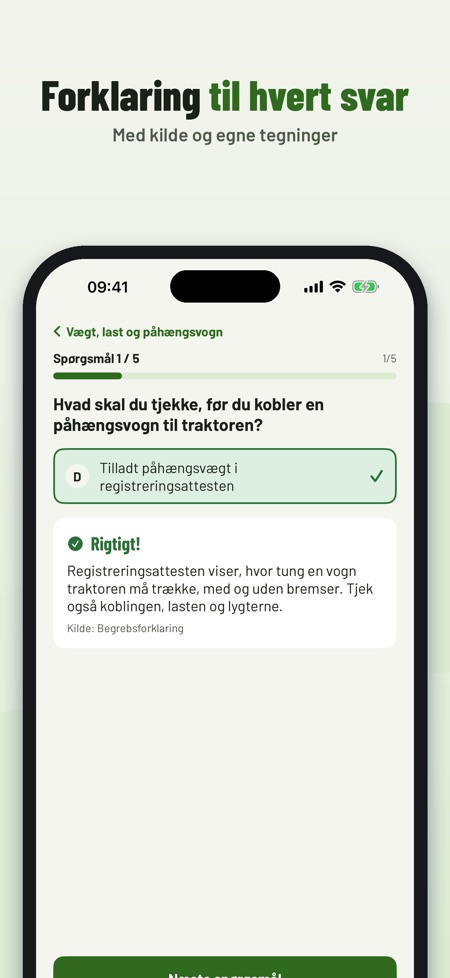
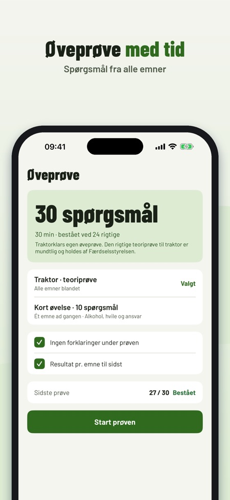

Teori til kørekort til traktor. Øv teorien til traktorkørekort: spørgsmål med forklaring, øveprøve og regler for vægt, trailer og fart – på dansk og uden internet.



Traktorklar hjælper dig med at øve teorien til traktorkørekortet – med traktorregler, ikke bilregler.
Du kan øve 20 spørgsmål, ordlisten og tjeklisten uden køb. Den fulde version er et engangskøb, der låser alle spørgsmål, øveprøver og statistik op. Intet abonnement.
Traktorklar er uafhængig og ikke tilknyttet Færdselsstyrelsen eller politiet. Prøven tager du hos Færdselsstyrelsen.